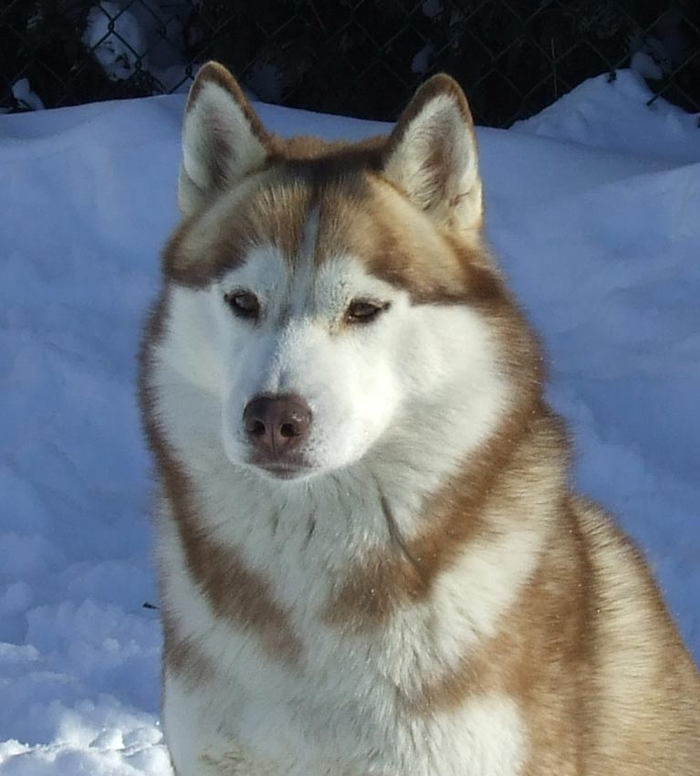
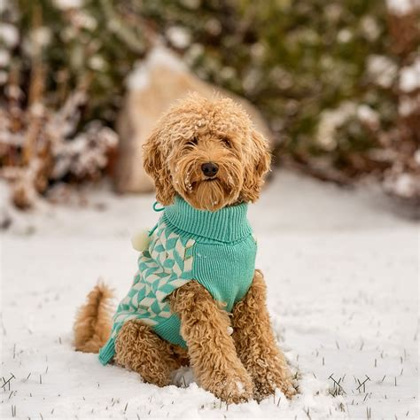
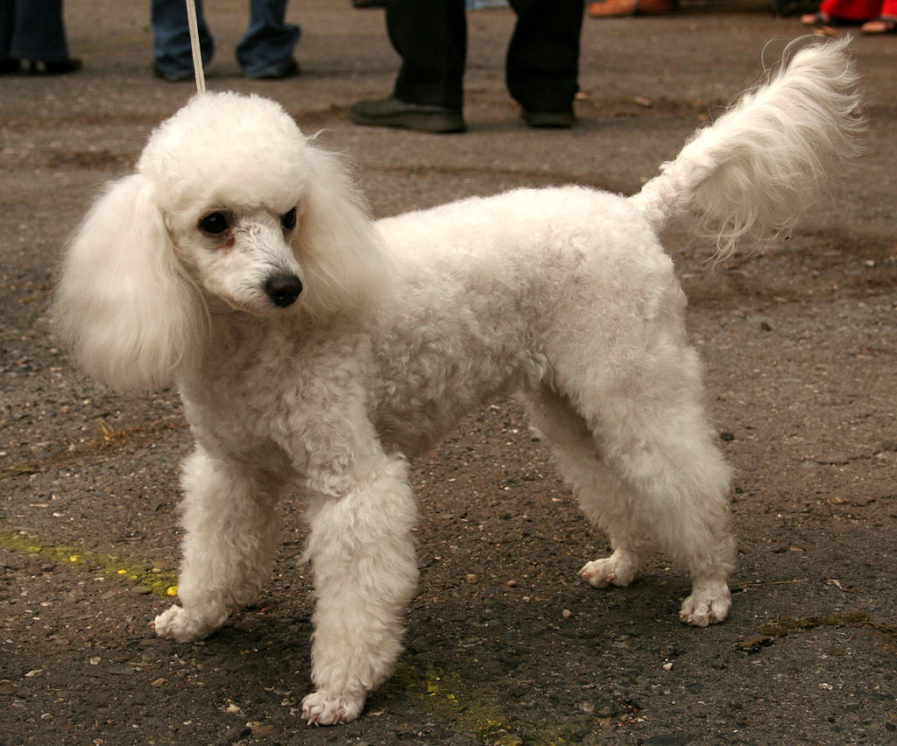
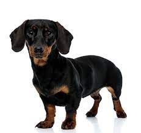

|
||
|  | - Huskies are a kind and lovable dog breed, and are also very smart! They are able to learn new things easily, and are also very furry. With that being said, huskies are unfortunately expensive, so it would be very hard to get one yourself. |
|
|  | - Labradoodles are a mixed breed of a poodle and a labrador retriever. Their characteristics are very diverse, being a mixed breed. Labradoodles' hair can be anything from soft, curly, straight, etc. With that being said, labradoodles are one of the most expensive dogs, as it is a mixed breed. |
|
|  | Poodles are athletic and active, with many different varieties and sizes. Poodles are highly energetic and very smart, usually very obedient. Though an athletic breed, poodles aren't really suitable to be guard dogs as they aren't a territorial or aggresive breed. |
|
|  | The Dachshund (or as some people like to call it, the "hotdog dog") is a breed of dog that has a distinctly small but long body. Dachshunds are also known as hunting dogs, but are usually playful. While they're playful with people they know, with strangers, not so much. Dachshunds are known to be aggressive to strangers, which can be a big turn-off. They are also ranked 12th among the most popular dog breeds, which is interesting. |